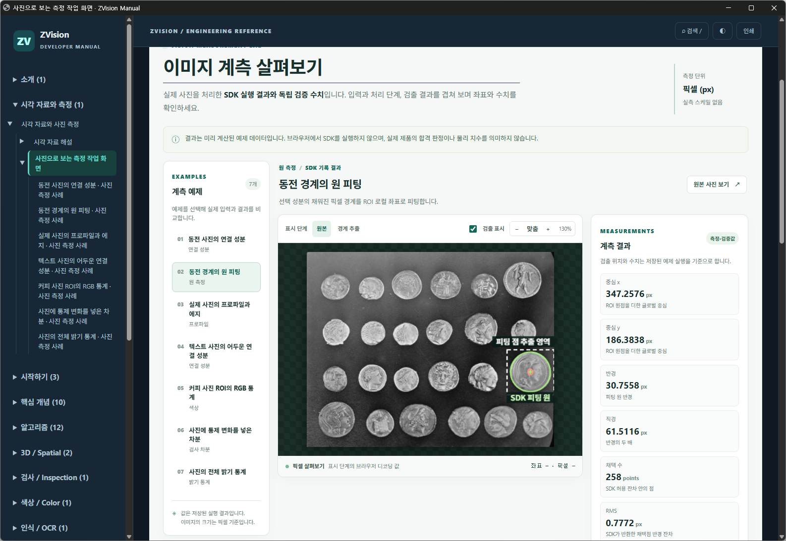

동전 경계의 원 피팅
선택 성분의 채워진 픽셀 경계를 ROI 로컬 좌표로 피팅합니다.



측정 결과와 단위
| 측정값 | 결과 | 단위 | 해석 |
|---|---|---|---|
| 중심 x | 347.258 | px | ROI 원점을 더한 글로벌 중심 |
| 중심 y | 186.384 | px | ROI 원점을 더한 글로벌 중심 |
| 반경 | 30.7558 | px | 피팅 원 반경 |
| 직경 | 61.5116 | px | 반경의 두 배 |
| 채택 수 | 258 | points | SDK 허용 잔차 안의 점 |
| RMS | 0.777209 | px | SDK가 반환한 채택점 반경 잔차 |
처리 순서
- 경계 추출 ·
SciPy binary_fill_holes / binary_erosion이진 성분의 경계 픽셀 중심을 만듭니다. - 원 피팅 ·
zvision.fit_circleROI 로컬 점으로 원을 적합하고 전체 영상 좌표로 표시합니다.
표시 영역과 실제 처리 범위
선택 성분 주변 영역의 경계 점을 ROI 로컬 좌표로 원 피팅하고, 결과 중심에 영역 원점을 더해 전체 영상 좌표로 표시합니다.
피팅 점 추출 영역: x=311, y=152, 폭=73, 높이=70 px. 이 사각형의 의미와 실제 연산 범위는 위 설명을 따릅니다.
파라미터
- inlier_threshold = 4.0
- 반경 잔차 한계(픽셀)
- boundary_points = 258
- 경계 픽셀 중심 수
어떻게 검증했는가
NumPy로 각 경계점의 |hypot(x−cx,y−cy)−r|와 채택 수 및 RMS 재계산
사진과 결과를 해석할 때
공개 예제 사진을 입력으로 사용한 재현 예시입니다. 사용자 생산 영상이 아닙니다.
길이와 면적은 픽셀 및 픽셀 제곱입니다. 실제 치수·장비 정확도·생산 합격 판정이 아닙니다.
사진의 원본 데이터 설명과 사용 조건 · Brooklyn Museum · no known copyright restrictions